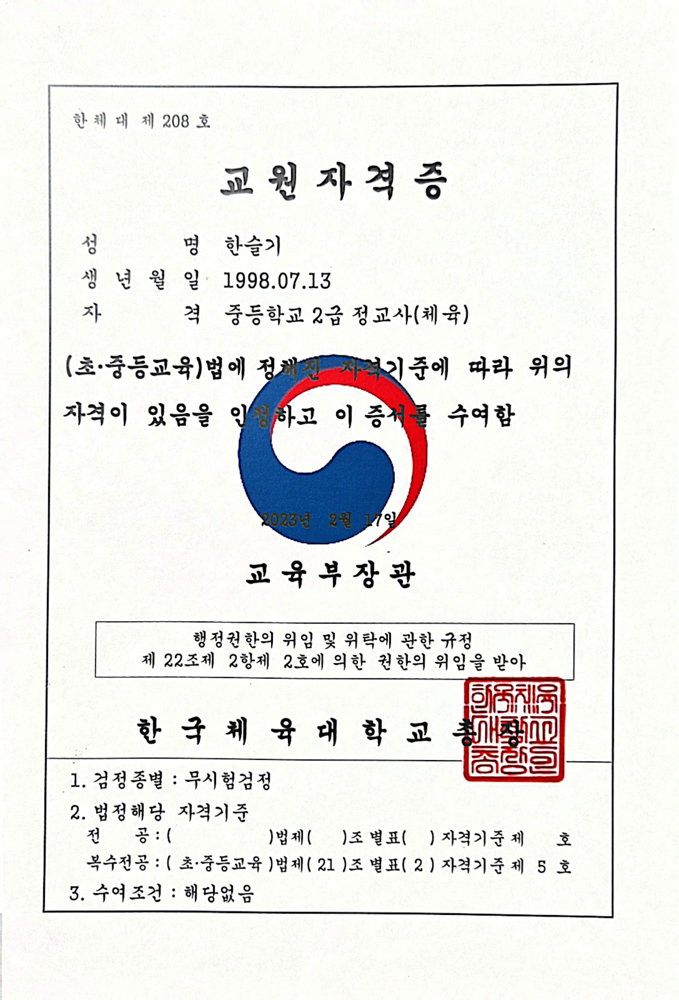
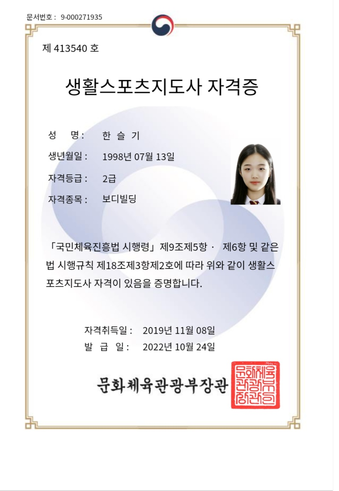
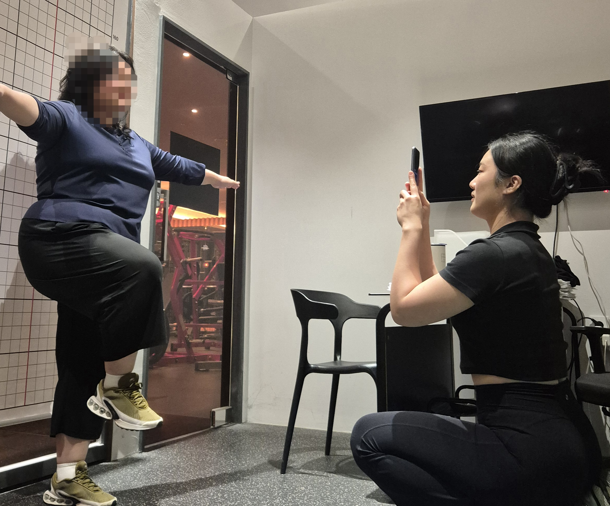
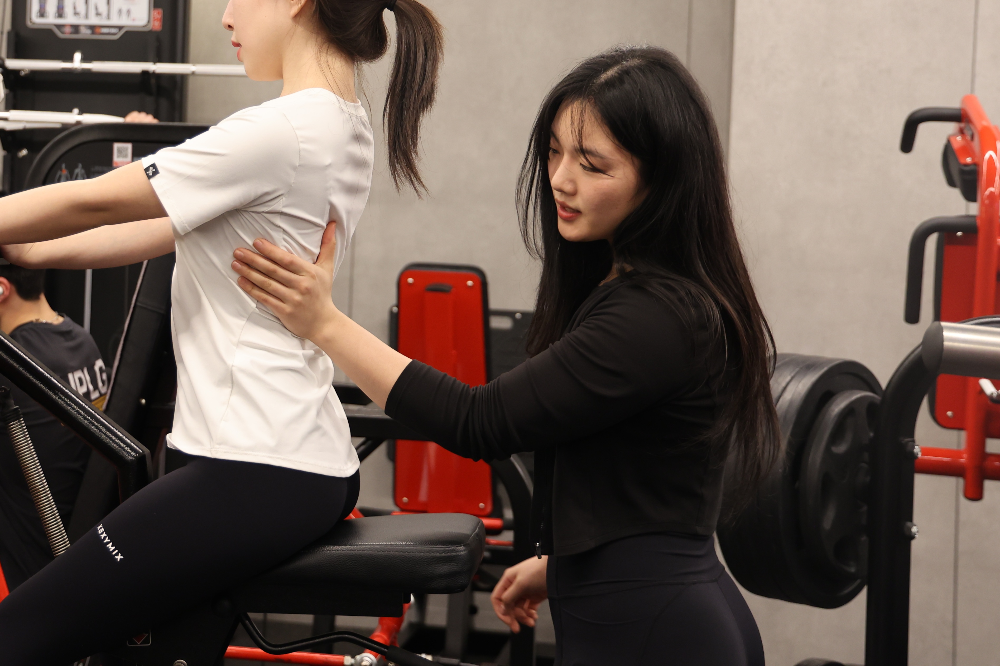
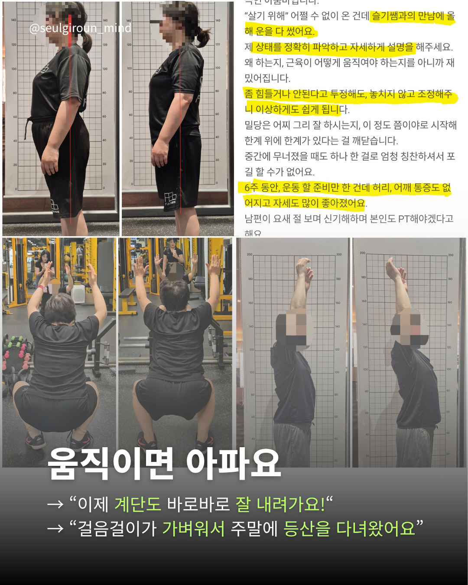
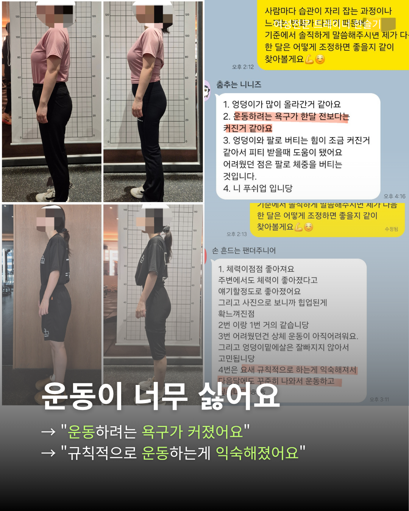
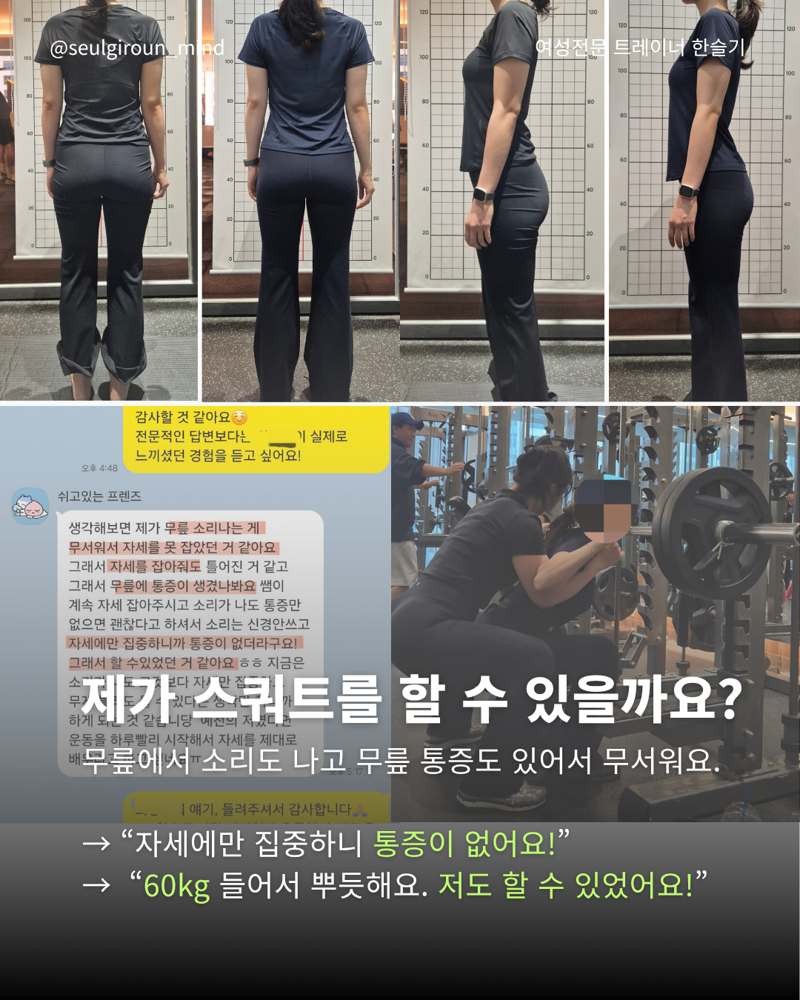
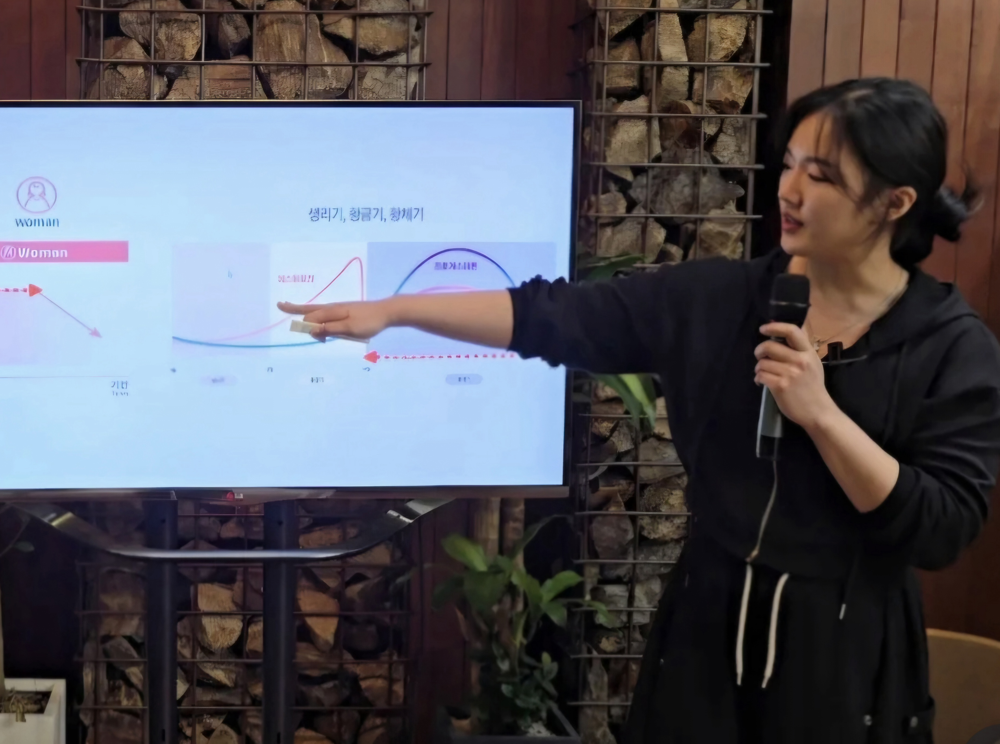
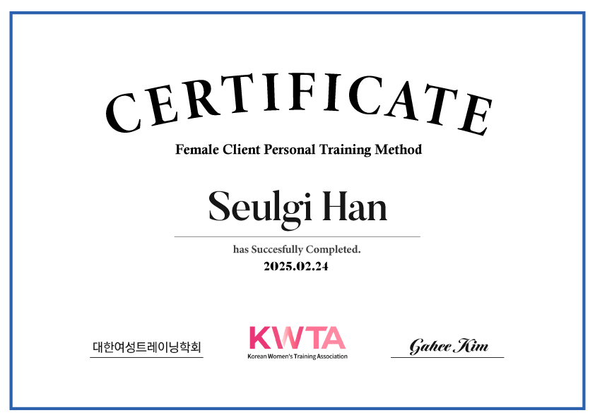
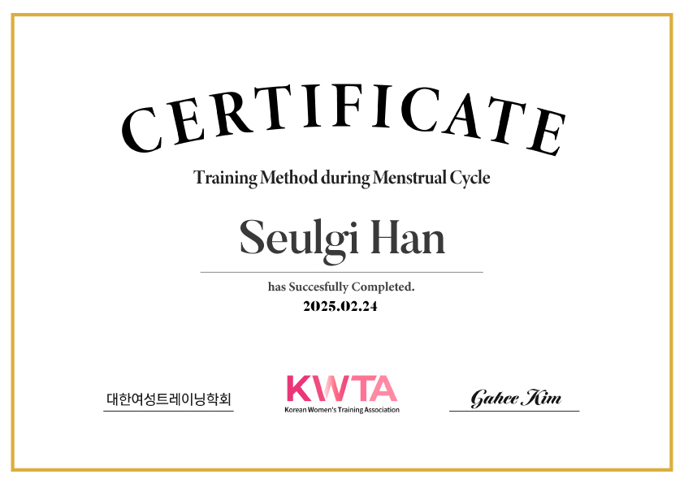

1986 FITNESS / HAN SEUL GI
완벽한 하루보다,
계속 이어가는 운동.
여성 회원님의 생활과 컨디션에 맞춰
꾸준히 운동할 수 있는 기준을 함께 만듭니다.

PERSONAL TRAINER
한슬기 트레이너
내 생활에 맞게,
흔들려도 다시 이어가는 운동.
중등학교 2급 정교사(체육)
생활스포츠지도사 2급(보디빌딩)
QUALIFICATIONS
가르치는 전문성,
운동을 지도하는 기본.
한슬기 트레이너 · 주요 자격

중등학교 2급 정교사 · 체육
한국체육대학교 발급 · 2023년 2월 17일
교원자격증 크게 보기 ↗
생활스포츠지도사 2급
보디빌딩 · 2019년 11월 8일 취득
생활스포츠지도사 자격증 크게 보기 ↗MY COACHING PHILOSOPHY
내 몸의 상태를 알고,
내 생활 안에서 지속할 수 있도록.
운동량을 늘리거나 정해진 식단을 따르는 것만으로는 오래 지속하기 어렵습니다. 생리주기와 그때의 컨디션, 수면, 피로, 생활패턴을 함께 살펴 운동 강도와 방향을 조절합니다.
계획이 조금 흐트러진 날에도 운동을 전부 놓지 않도록. 오늘 할 수 있는 운동을 선택하고, 나에게 맞는 식사와 루틴을 찾아가는 과정을 함께합니다.


한슬기 트레이너 · 1986 원흥점
FIND YOUR START
지금의 고민에서 시작하는
세 가지 커리큘럼.
카드를 누르면 사진과 수업 내용을 자세히 볼 수 있습니다.

01 / CURRICULUM움직임 기초 만들기움직임이 불편해 운동 시작이 망설여질 때상세 커리큘럼 보기상세 접기+

02 / CURRICULUM꾸준한 운동 습관 만들기운동이 싫고, 시작해도 자꾸 끊길 때상세 커리큘럼 보기상세 접기+

03 / CURRICULUM스쿼트 자신감 쌓기스쿼트가 낯설고, 혼자 하기 두려울 때상세 커리큘럼 보기상세 접기+
LEARNING FOR YOUR EVERYDAY
여성의 몸과 일상을
더 깊이 이해하기 위해.

추가 교육 · 여성 트레이닝
대한여성트레이닝학회(KWTA)
여성 회원 퍼스널 트레이닝 방법 과정 수료
생리주기 중 트레이닝 방법 과정 수료
수료일 · 2025년 2월 24일


IS THIS YOU?
이런 고민이 있다면,
함께 시작해요.
- “완벽하게 하려다가 한 번 흐트러지면 전부 놓게 돼요.”
- “PT는 받지만 혼자 오면 무슨 운동을 할지 모르겠어요.”
- “컨디션이 다른데 매번 똑같이 운동해도 될지 고민돼요.”
- “일상과 함께 유지할 수 있는 다이어트를 하고 싶어요.”
YOUR OWN PACE
흔들려도 다시 이어갈 수 있는
나만의 운동 기준.
지금의 생활과 운동 고민부터 들려주세요.
한슬기 트레이너와 함께 방향을 찾아갑니다.